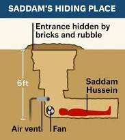

Capture of Saddam Hussein - Operation Red Dawn
Saddam Hussein
Saddam Hussein was the President of Iraq from 1979 until 2003. He was a central figure in Middle Eastern politics for decades, leading Iraq through major regional conflicts. Following the United States led invasion of Iraq in March 2003, his government collapsed and he went into hiding.
Background
Born in 1937 in Tikrit, Iraq, Saddam Hussein rose through the ranks of the Ba'ath Party before becoming president. His leadership was marked by authoritarian control, repression and regional conflict. Over time, his rule drew international criticism, particularly after Iraq's invasion of Kuwait in 1990.
The Manhunt
Deck of most-wanted playing cards issued to U.S. troops to help identify high-value targets.
After Baghdad fell in April 2003, Saddam Hussein disappeared from public view. Coalition forces quickly placed him at the top of their most-wanted list, viewing his capture as both strategically and symbolically important. The search involved extensive intelligence work across central Iraq, particularly in areas around Tikrit, his hometown, where he retained tribal and family support.
To help soldiers identify key figures of the former Iraqi regime, the U.S. military issued a deck of playing cards featuring the names and faces of high-value targets. Troops were encouraged to study the cards during downtime, turning recognition into a form of routine memorization. Saddam Hussein himself appeared as the Ace of Spades, the most prominent card in the deck.
On the ground, coalition forces combined raids, informant networks, signal intelligence and detainee interrogations. Units repeatedly searched farms, villages and suspected safe houses. Despite the scale of the effort, Hussein avoided capture for months by moving frequently and relying on a small circle of loyal supporters, a pattern we shall see repeat itself frequently in this archive.
Discovery & Capture

The breakthrough came in December 2003 through intelligence gathered from detainees connected to Hussein's inner network. On December 13, U.S. forces launched Operation Red Dawn near the town of Ad-Dawr, close to his hometown of Tikrit.
During the search, soldiers discovered Saddam Hussein hiding in a small underground compartment later widely referred to in media reports as a “spider hole.” The cramped hiding place, concealed beneath a cover on farmland, quickly became one of the most recognizable images of the Iraq War era.
Shortly after the operation, the U.S. government released photographs and video footage of Saddam in custody. These images were broadcast globally and were intended to confirm his capture and demonstrate that he no longer posed a political threat.
Aftermath
Following his capture, Saddam Hussein was tried by the Iraqi Special Tribunal. In 2006, he was convicted of crimes against humanity and sentenced to death. His arrest marked a symbolic turning point in the Iraq War and remains one of the most widely reported captures of a former head of state in modern history.
In the years that followed, the image of Saddam Hussein's hiding place remained widely recognized in discussions of the Iraq War. The so-called “spider hole” became shorthand in media commentary for the dramatic fall of a once-dominant political figure, illustrating how modern conflicts are often remembered through a handful of powerful visual moments.